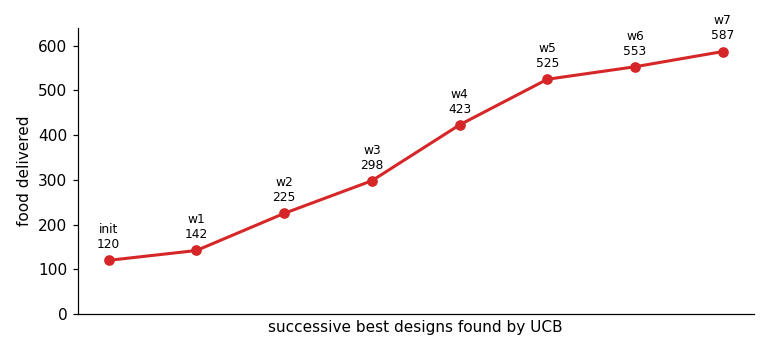

A spread of simulations
Ten behaviours, emergent ant trails, and an optimized maze forager
Once the vocabulary existed, qualitatively different behaviours were just different specs over the same code — breadth comes from the intermediate representation, not from new code. Each simulation is 100–600 cells of ~100 MLS-MPM particles (the two cell types in two colours over the shaded chemical field). All simulations below use a periodic (toroidal) domain.
Five simulations from one registry
Across all of them, only the operator choices and their parameters differ; the engine, the operators, and the schedule grammar are identical.
Emergent ant trails
Adding the trail operator (a Physarum/Jones three-sensor rule: each ant samples pheromone ahead-left / ahead / ahead-right and turns toward the strongest, while motility drives it forward and secrete lays pheromone) yields self-reinforcing trails that grow, are followed, and coarsen over long runs — classic stigmergy.
The full simulation:
name: ant
seed: 0
n_frames: 1500
sets:
cell:
n: 150
types: {soft: {fraction: 0.6, youngs: 60}, stiff: {fraction: 0.4, youngs: 300}}
particle: {parent: cell, per_parent: 60, radius: 0.012}
fields:
pheromone: {frame: grid, res: 160, diffusion: 0.02, decay: 0.04, couples_to: cell}
operators:
- {op: motility, at: cell, speed: 300.0, rot: 0.06} # persistent forward motion
- {op: trail, at: "cell[type=soft]", from: pheromone, turn: 0.4, sensor_dist: 0.04, sensor_angle: 0.5}
- {op: secrete, at: "cell[type=soft]", to: pheromone, rate: 2.0}
- {op: mpm, at: particle, n_grid: 128, substeps: 8, a_max: 1200, drag: 0.6}
schedule: [aggregate, trail, motility, secrete, pheromone.diffuse, mpm]Five variants, same code
Each variant is the same trail + motility + secrete code with a few parameters changed (turn rate, sensor reach/angle, pheromone diffusion/decay, deposit rate, rotational noise). The parameter axes span the trail-formation regime — from loose wandering to tight reinforced networks.
Cells in a maze: foraging and optimization
A harder simulation exercises more of the language: two rigid cell populations start at home (bottom-left), navigate a walled maze to food (top-right), pick food up, and carry it back. It adds three constructs — obstacles, a per-cell loaded state, and state-gated selectors (cell[loaded=0] seeks food, cell[loaded=1] returns home) — and answers the design question how does one model an obstacle: a wall is not a pairwise force but a static occupancy mask reused as a boundary condition by machinery already present. The same mask (i) zeroes the MPM grid velocity inside walls, so rigid cells cannot enter, and (ii) imposes no-flux on field diffusion, so a chemical routes around the walls. Two such fields — one sourced at food, one at home — become navigation gradients that solve the maze; unloaded and loaded cells climb opposite ones.
Optimizing the colony
Because the whole simulation is differentiable and the spec is tiny, the colony can be optimized: search the behavioural parameters to deliver food as fast as possible. The objective — units delivered — comes from a discrete pick-up/drop-off and is therefore non-differentiable, so we use a black-box UCB search over eight levers (motility speed and rotation, sense gain, MPM drag and force cap, cell stiffness and size, colony size). Over a few dozen simulations it improves delivery roughly five-fold.
This echoes the differentiable-simulator design literature, where a smooth objective is optimized by gradients through the rollout; the general recipe is both — UCB or CEM for the discrete and structural choices, and gradient-through-rollout on a smooth surrogate for the continuous interior.

The optimizer keeps a log of every accepted improvement, which is itself the finding — it shows what makes a good forager:
| # | food | speed | gain | drag | rot | youngs | a_max | radius | \(n\) |
|---|---|---|---|---|---|---|---|---|---|
| init | 120 | 40 | 180 | 2.00 | 0.30 | 550 | 700 | 0.01 | 60 |
| 1 | 142 | 74 | 379 | 2.54 | 0.10 | 517 | 454 | 0.02 | 46 |
| 2 | 225 | 106 | 253 | 1.25 | 0.31 | 36 | 599 | 0.01 | 88 |
| 3 | 298 | 83 | 270 | 0.97 | 0.48 | 78 | 1362 | 0.01 | 93 |
| 4 | 423 | 49 | 391 | 1.55 | 0.18 | 160 | 1438 | 0.01 | 106 |
| 5 | 525 | 21 | 341 | 2.99 | 0.40 | 24 | 1633 | 0.01 | 120 |
| 6 | 553 | 52 | 400 | 0.92 | 0.56 | 20 | 880 | 0.01 | 116 |
| 7 | 587 | 46 | 342 | 1.70 | 0.39 | 20 | 988 | 0.01 | 120 |
Two parameters move monotonically to their bounds — the colony grows to its cap (\(n\approx120\): more foragers deliver more food) and the cells soften to the floor (\(\text{youngs}\to20\): soft, deformable cells squeeze through the maze far better than the rigid ones we started from). Chemotaxis stays strong throughout (\(\text{gain}\sim340\)–\(400\)) and the cell radius sits at its minimum (smaller cells clear the gaps). The remaining knobs are traded off rather than maximized: the best design (winner_7) is a balanced, moderate-speed, moderate-drag colony, not any extreme. The headline is that the search rediscovered, with nothing hand-coded, that a large swarm of small, soft, strongly-chemotactic cells forages a maze best.
Initial vs. optimized
The difference is visible in the trails themselves: the initial colony barely establishes a route, whereas the optimized one lays a strong chemoattractant highway that threads both maze gaps from home to food.
The full optimization trajectory, run by run:
What the process taught us
- The intermediate representation is the whole game. Ten distinct behaviours and an ant model were all different YAML over the same code.
- Selectors are the highest-leverage primitive.
cell[type=soft]expresses “only population 1 does X” and lets behaviours coexist; every operator must honour the selector mask. - Verification must check intent, not just “it ran”. The hard bugs were physical: unstable diffusion (\(dt\cdot D>0.25\)), wrong particle volume, unclamped accelerations blowing up MPM, cell inversion at very low stiffness, GPU non-determinism breaking reproducibility, and — subtlest — the wrong metric (net displacement vs. nearest-neighbour clustering).
- Honesty about regime. Self-secreted chemotaxis aggregates only below a density threshold (above it the field is spatially flat — correct physics); the verify output should state the regime, not silently show the one setting that worked.
- Determinism is a feature you must force (deterministic CUDA kernels), or “reproduce with a new seed” is meaningless.
- Obstacles are boundary conditions, not forces. A wall is one static mask reused by the MPM grid (interior zero-velocity) and the diffusing fields (no-flux); maze navigation then falls out of the field’s gradient, with no special pathfinding code.
- Cap speed below the CFL limit. Strong gradients otherwise drive cells to the grid’s stability ceiling, where they move ballistically (“asteroids”); an explicit max-speed clamp plus overdamped drag restores smooth, biological motion.
- Discrete objectives need black-box search, differentiable ones admit gradients — use both. Food count (discrete) optimizes well under UCB; a smooth surrogate opens the gradient-through-rollout path, and the two compose.
- Reproducibility needs full-precision provenance. Archiving rounded parameters made a winner re-simulate to a different score; the exact spec (and seed) must be stored, or the run is not bit-reproducible.